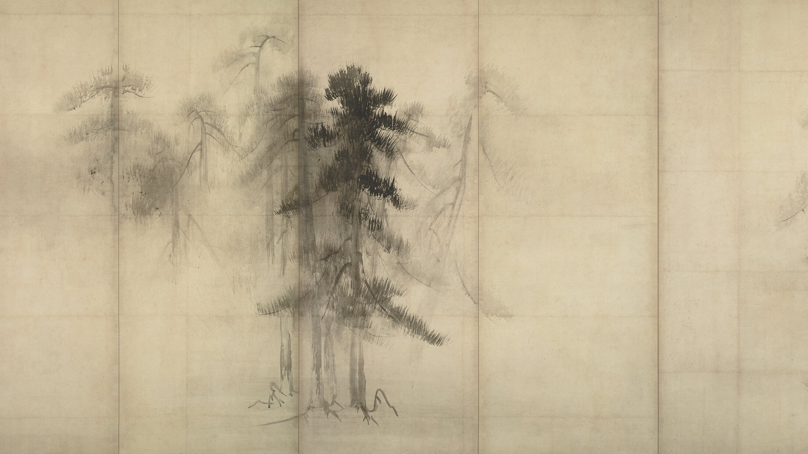
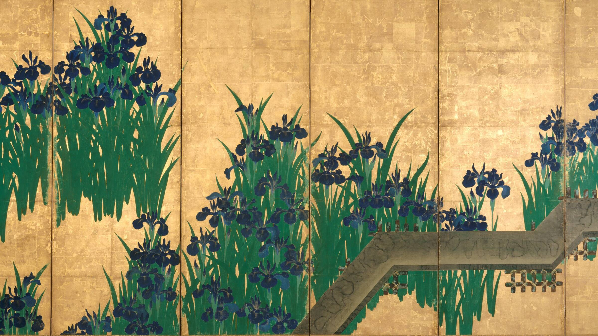
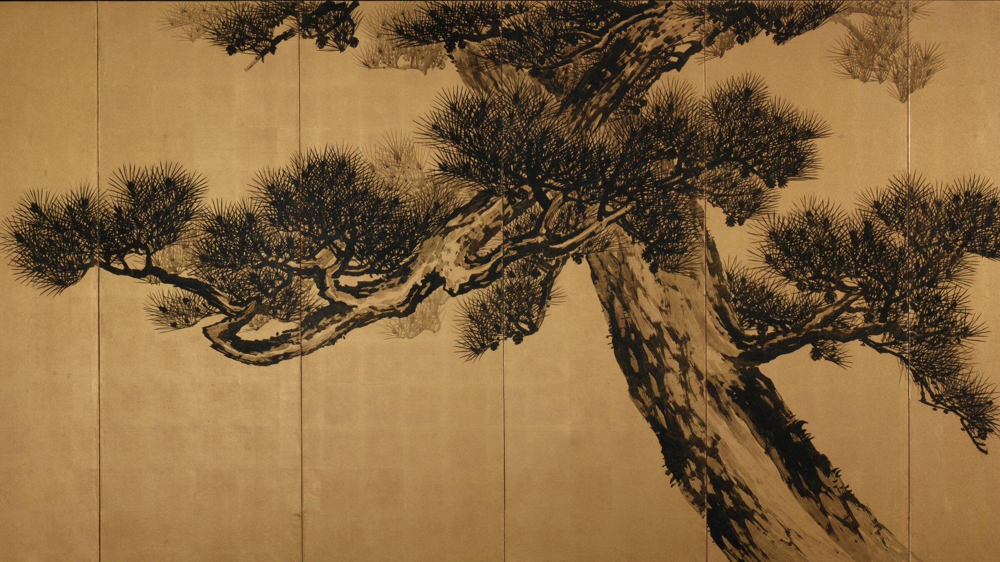
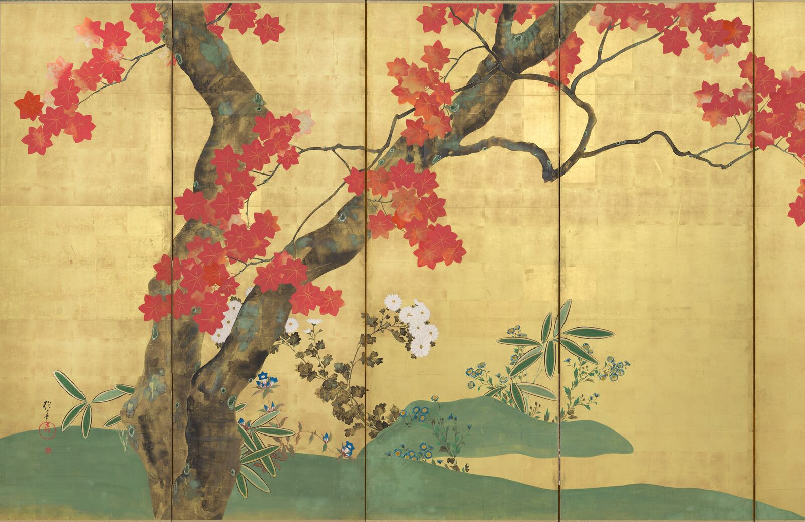
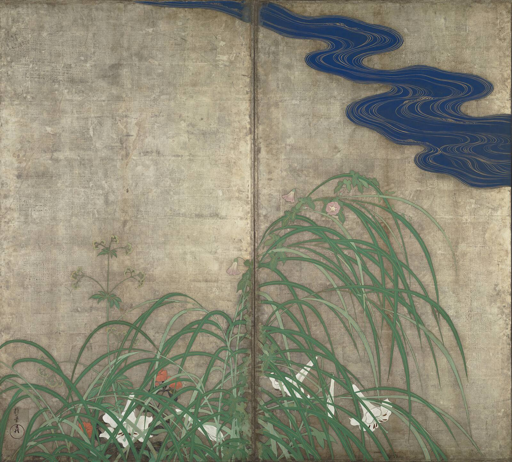
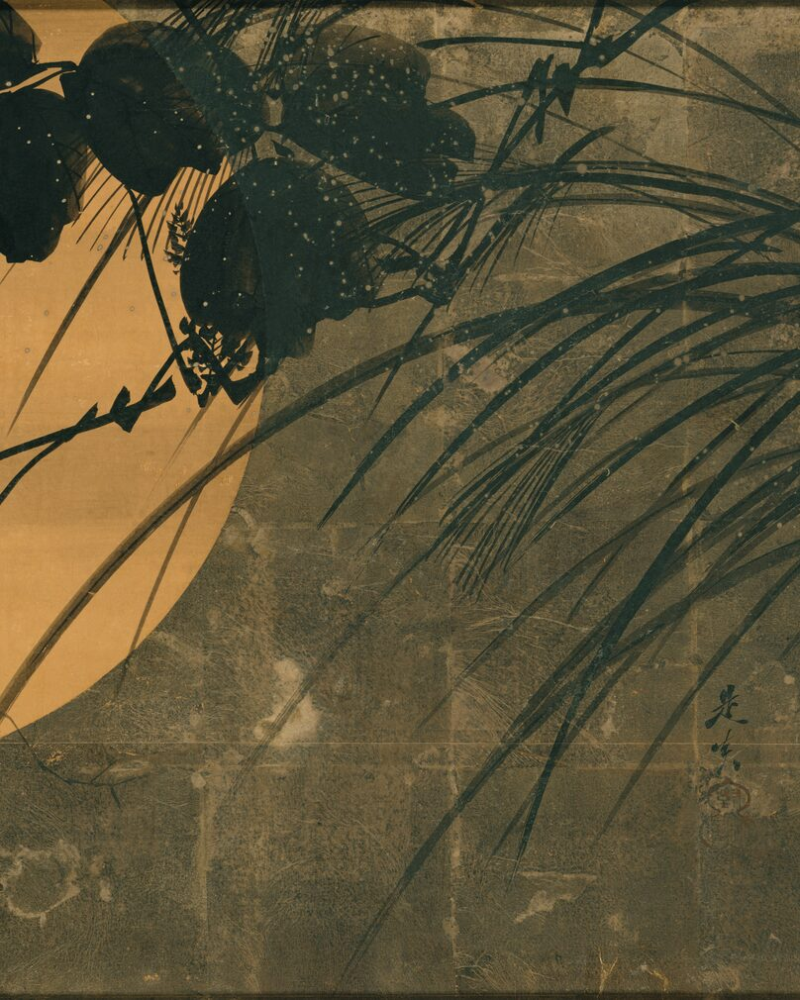
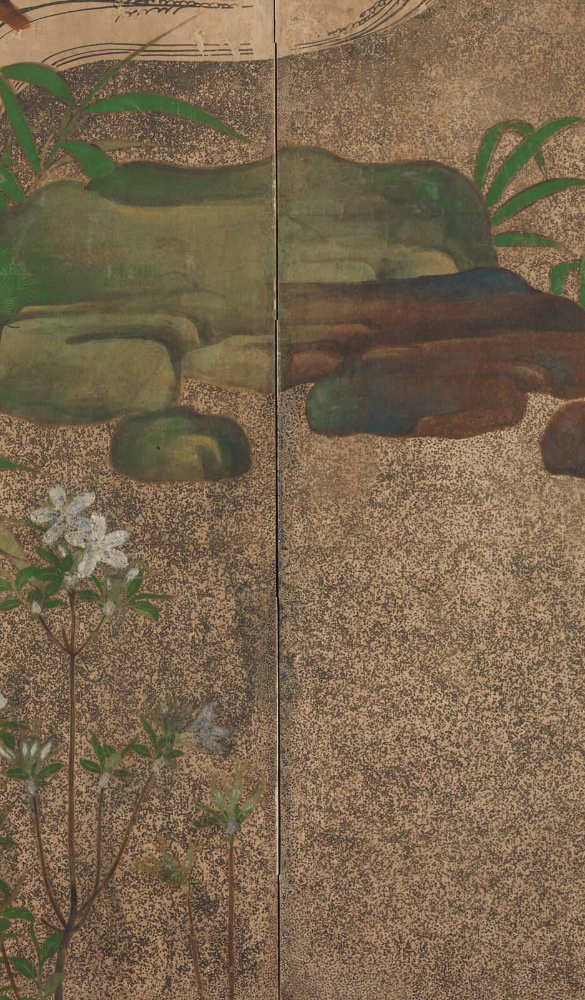

いい仕事を、
見つかるかたちに。
会社のホームページを1ページ、2週間ほどでつくります。
杜工舎は、つくる側が持つ仕事と知識を、探す人・選ぶ人へつなぐWebの工房です。
会社や商品のよさは、知っている人の内側に留まりがちです。杜工舎は、その情報をWebで届く形に整え、必要としている人との間に入口をつくります。

- 料金1ページ98,000円（税込）買い切り・月々いただくものはありません。
- 納期2週間ほどご記入シートと写真をいただいてから
- 見本18業種の見本土木・測量・建築・設備・電気・造園・塗装・解体ほか
応募する人も、お客さまも、
まず会社名で検索します。
何も出てこなければ、そこで止まる ── 理由は3つ。
応募の、ひとつ手前で止まる
建築・土木・測量技術者の有効求人倍率は6.05倍。全職業の平均1.11倍の、およそ5.5倍です。そのうえ、転職した人の約6割が、入社を決めた会社の採用サイトを見ています。求人票を見て興味を持った方が、会社名で検索して何も出てこず、そこで止まる。応募という行動の、ひとつ手前の話です。
有効求人倍率は厚生労働省「一般職業紹介状況」令和8年5月・常用（除パート）。採用サイトの閲覧率は株式会社ベイジ「中途採用における採用サイト利用実態調査 2024年度版」（2024年、過去5年以内に転職活動をした社会人 3,317人）。
仕事の入口が細る
元請の審査、施主の下調べ、同業からの紹介。どれも会社名で検索するところから始まります。その場で何ができる会社か分からなければ、次の候補に移られます。実績が並んだ1枚が、その先へ進む入口になります。
AIが参考にする先に、自社が無い
ChatGPTなどのAIで調べる人が増えています。生成AIを使ったことがある人は5割を超えました。1年で約2倍に増えました。AIによる概要は検索で見つかるページを参考に示すので、会社の公式ページはその参照先の候補になります。
生成AIの利用経験は総務省「令和8年版 情報通信白書」（20〜69歳のネットモニター調査・年代ごと同数。52.2%、前年26.7%）。AIによる概要が参考にしたページを示すことは Google 検索セントラル「AI 機能とウェブサイト」（2025年12月更新）。

仕事が伝わる、
会社の一枚。
ご記入シートと写真をいただいてから、2週間ほどで制作いたします。日本の美意識からとった五つの型です。飾りを削り、時代が変わっても古びないものだけを残しました。
18業種の見本から
御社に近いものをどれでも下の一覧から、御社に近い業種を押してください。その業種の5案が出ます。
いまは5案を、それぞれ別の業種の見本で並べています。
五つの型土木の5案測量の5案建築の5案建築設計の5案設備の5案電気の5案塗装の5案造園の5案解体の5案運送の5案農業の5案飲食店の5案バーの5案美容室の5案神社の5案寺院の5案古書店の5案学習塾の5案
見本を押すと、実物が新しいタブで開きます 業種を選び直す選ぶ淡・玄・雅・粋・理の5案から1つ。扇の色と見出しは、その見本の実物からとっています。
お付き合いが始まる。雨に洗われた白と、雨脚。
ここにあります。写真を、闇に沈めて。
木を活かす。灯のような墨に、金の細線。
当たり前をつくる。藍の、細い縦線だけ。
氏神さまです。一本の筋を、通す。
当たり前をつくる。雨に洗われた白と、雨脚。
当たり前をつくる。写真を、闇に沈めて。
当たり前をつくる。灯のような墨に、金の細線。
当たり前をつくる。藍の、細い縦線だけ。
当たり前をつくる。一本の筋を、通す。
測ることから始まる。雨に洗われた白と、雨脚。
測ることから始まる。写真を、闇に沈めて。
測ることから始まる。灯のような墨に、金の細線。
測ることから始まる。藍の、細い縦線だけ。
測ることから始まる。一本の筋を、通す。
お付き合いが始まる。雨に洗われた白と、雨脚。
お付き合いが始まる。写真を、闇に沈めて。
お付き合いが始まる。灯のような墨に、金の細線。
お付き合いが始まる。藍の、細い縦線だけ。
お付き合いが始まる。一本の筋を、通す。
暮らしの見取り図です。雨に洗われた白と、雨脚。
暮らしの見取り図です。写真を、闇に沈めて。
暮らしの見取り図です。灯のような墨に、金の細線。
暮らしの見取り図です。藍の、細い縦線だけ。
暮らしの見取り図です。一本の筋を、通す。
動かす側の設計です。雨に洗われた白と、雨脚。
動かす側の設計です。写真を、闇に沈めて。
動かす側の設計です。灯のような墨に、金の細線。
動かす側の設計です。藍の、細い縦線だけ。
動かす側の設計です。一本の筋を、通す。
受けられない仕事です。雨に洗われた白と、雨脚。
受けられない仕事です。写真を、闇に沈めて。
受けられない仕事です。灯のような墨に、金の細線。
受けられない仕事です。藍の、細い縦線だけ。
受けられない仕事です。一本の筋を、通す。
建物を長持ちさせる
工事です。雨に洗われた白と、雨脚。
建物を長持ちさせる
工事です。写真を、闇に沈めて。
建物を長持ちさせる
工事です。灯のような墨に、金の細線。
建物を長持ちさせる
工事です。藍の、細い縦線だけ。
建物を長持ちさせる
工事です。一本の筋を、通す。
木を活かす。雨に洗われた白と、雨脚。
木を活かす。写真を、闇に沈めて。
木を活かす。灯のような墨に、金の細線。
木を活かす。藍の、細い縦線だけ。
木を活かす。一本の筋を、通す。
近隣に気を配る。雨に洗われた白と、雨脚。
近隣に気を配る。写真を、闇に沈めて。
近隣に気を配る。灯のような墨に、金の細線。
近隣に気を配る。藍の、細い縦線だけ。
近隣に気を配る。一本の筋を、通す。
信用を運ぶ。雨に洗われた白と、雨脚。
信用を運ぶ。写真を、闇に沈めて。
信用を運ぶ。灯のような墨に、金の細線。
信用を運ぶ。藍の、細い縦線だけ。
信用を運ぶ。一本の筋を、通す。
ちゃんと食べる。雨に洗われた白と、雨脚。
ちゃんと食べる。写真を、闇に沈めて。
ちゃんと食べる。灯のような墨に、金の細線。
ちゃんと食べる。藍の、細い縦線だけ。
ちゃんと食べる。一本の筋を、通す。
一杯の贅沢を。雨に洗われた白と、雨脚。
一杯の贅沢を。写真を、闇に沈めて。
一杯の贅沢を。灯のような墨に、金の細線。
一杯の贅沢を。藍の、細い縦線だけ。
一杯の贅沢を。一本の筋を、通す。
いちばん丁寧に。雨に洗われた白と、雨脚。
いちばん丁寧に。写真を、闇に沈めて。
いちばん丁寧に。灯のような墨に、金の細線。
いちばん丁寧に。藍の、細い縦線だけ。
いちばん丁寧に。一本の筋を、通す。
氏神さまです。雨に洗われた白と、雨脚。
氏神さまです。写真を、闇に沈めて。
氏神さまです。灯のような墨に、金の細線。
氏神さまです。藍の、細い縦線だけ。
氏神さまです。一本の筋を、通す。
ここにあります。雨に洗われた白と、雨脚。
ここにあります。写真を、闇に沈めて。
ここにあります。灯のような墨に、金の細線。
ここにあります。藍の、細い縦線だけ。
ここにあります。一本の筋を、通す。
見せてください。雨に洗われた白と、雨脚。
見せてください。写真を、闇に沈めて。
見せてください。灯のような墨に、金の細線。
見せてください。藍の、細い縦線だけ。
見せてください。一本の筋を、通す。
教える塾です。雨に洗われた白と、雨脚。
教える塾です。写真を、闇に沈めて。
教える塾です。灯のような墨に、金の細線。
教える塾です。藍の、細い縦線だけ。
教える塾です。一本の筋を、通す。
01 — 05
五案とも、載せる項目は同じです。会社概要も、事業内容も、採用情報も、すべて入ります。写真も文章も御社のものに入れ替わり、色も御社に合わせて無料でお変えしますので、同じ型を選んだ会社と並べても、同じサイトには見えません。
選んでいただくのは、かたちだけ。だから、1ページ 98,000円（税込）、2週間ほどでお渡しできます。
料金
ホームページをつくるとき
ホームページ作成
98,000円（税込）1ページ構成・スマートフォン対応。HTMLデータ一式をお渡しします。買い切りで、月々いただくものはありません。
公開設定の代行（ご希望の方のみ）
50,000円（税込）インターネット上に公開するところまで代行します。ご自身でできる場合は要りません。中身は下にご説明します。
あとから直すとき
文章の修正
1回20,000円（税込）レイアウトはそのままに、文章を差し替えます。
写真の入れ替え
1回20,000円（税込）お送りいただいた写真に差し替えます。
お渡ししたあと2週間のご確認の期間中は、1回に限り無償で直します。上の料金は、その期間を過ぎたあとのものです。
すべて税込。制作にあたって、これ以外にいただくものはありません。前金はいただかず、お支払いは完成品をご覧になってから。データは御社のものです。お支払いは銀行振込です。完成品をご覧いただいたあとに請求書をお送りしますので、発行から2週間以内にお振り込みください。
公開後は、御社名義でご契約いただくサーバーとドメインの利用料（あわせて年8,000〜20,000円ほど）だけがかかります。当方が受け取るものではありません。
公開したあと7日間は、表示の不具合（崩れ・文字化けなど）を無償で直します。
公開設定の代行とは
中身と、ご自身でなさる場合の流れ（11の手順）
お渡しするのはHTMLファイルです。ご自身でサーバーに置ける方は、この代行は必要ありません。「やり方が分からない」「触るのが不安」という場合に、インターネット上に公開するところまでをこちらで済ませます。
この一式をこちらで済ませて 50,000円（税込）、一度きりです。月々いただくものはありません。サーバーとドメインの利用料は御社のお支払いになります。目安はあわせて年8,000〜20,000円ほどです。御社名義の契約なので、ホームページは御社の手元に残ります。
ご自身でなさる場合は、おおよそこの流れです。
- サーバー契約
- 独自ドメイン取得
- Whois情報公開代行
- ネームサーバー変更
- DNS反映待ち（最大72時間）
- SSL証明書の発行
- FTP接続
- public_html へ設置
- .htaccess で www と https を統一
- Search Console 登録
- サイトマップ送信
順番と待ち時間が決まっていて、飛ばすとやり直しになります。反映を待たずにSSLを申し込むと発行に失敗し、置き場所を1階層まちがえるとページは表示されません。
ご依頼の流れ
所要約10分
ご記入シートに記入する
エクセル1枚
業種を選ぶと記入例が出ます。書いて、写真を添えて送るだけ。
所要約15分＋写真えらび
書けたシートを送る
メールに添付するだけ
書けたら、写真といっしょに info@morikosha.com
へ送ってください。件名は何でも構いません。2営業日以内のご返信を心がけています。 所要すぐ
完成品をご覧いただく
ご記入シートと写真をいただいてから、2週間ほどで制作いたします。前金はいただかず、お支払いは完成品をご覧になってから。
所要2週間ほど
御社の業種の記入例が、最初から入っています
上で選んだ業種に合わせたシートが開きます。そのままお使いいただいても、書き換えていただいても構いません。
【必須】以外は空欄で構いません。空欄の項目は掲載しません。
代表プロフィール

上原 光瑛杜工舎 代表 ／ 1級土木施工管理技士補
経歴・資格
経歴
- 2018年
- 埼玉大学 工学部 建設工学科 卒業
- 2018年
- 埼玉県庁 入庁（土木技術職）公園の整備、道路・河川の工事監督と維持管理、令和元年東日本台風の災害復旧に従事
- 2024年度
- 担当した地すべり復旧工事が 全建賞（災害枠・都市部門）を受賞（令和6年度）
- 2026年
- 埼玉県庁 退職（8年間勤務）
- 2026年
- 農業法人 入社（在籍中）
- 2026年
- 杜工舎 開業（さいたま市）
資格・講習
- 1級土木施工管理技士補1級土木施工管理技術検定 第一次検定 合格
- 準中型自動車免許5t限定
- 刈払機取扱作業者安全衛生教育 修了
- チェーンソーによる伐木等の業務特別教育 修了
1級土木施工管理技士の第二次検定、ビオトープ管理士2級（計画部門）、土壌医検定2級などの受験を続けています。現場の判断材料を増やすためで、資格そのものを売りにはしていません。
- 屋号
- 杜工舎（もりこうしゃ）
- 代表
- 上原 光瑛
- 資格
- 1級土木施工管理技士補
- info@morikosha.com
- 所在地
- 埼玉県さいたま市大宮区高鼻町３丁目
2018年3月に埼玉大学工学部建設工学科を卒業し、同年4月から8年間、埼玉県庁の土木技術職として、道路・河川・斜面・公園といった社会インフラの工事監督と維持管理、災害復旧に携わりました。
仕事は、設計の照査から積算、入札後の現場監督、完成検査まで。担当した工事のひとつに、令和元年東日本台風で崩れた斜面の地すべり復旧があります。現場の担当として工事を進め、この工事は令和6年度 全建賞（災害枠・都市部門）に選ばれました。発注する側に8年いたので、工事がどう進み、書類とお金のどこで手が止まるかを、体で知っています。
2026年3月に県庁を退職し、いまは農業法人に籍を置いて畑に出ています。建設の現場でも、農業の現場でも、同じ言葉を聞きました。「人が来ない」「いい仕事をしているのに、外から見えない」。仕事の中身は確かなのに、それを外から確かめる手立てがない ── 足りないのは腕ではなく、伝わる形だと考えるようになりました。
杜工舎（もりこうしゃ）を開業しました。会社の仕事を1ページのホームページに整え（見せる）、製品の違いを誰でもたどれる選定の仕組みに変えます（選ぶ）。材料にするのは、公表されている一次情報 ── 法令、公的統計、業界団体の名簿、メーカーが公開している仕様です。出典と、いつの時点のものかを画面に出します。分からないことは、分からないと書きます。
現場の判断を、データで支える ── それが杜工舎の仕事です。
杜工舎をはじめた想い
県庁で8年間、工事を発注し、監督する側にいました。現場で顔を合わせた会社の多くが、若い人が入ってこないという同じ悩みを抱えていました。
いま籍を置いている農業も、造園の現場も同じです。人手が足りない。募集をかけても来ない。その現実を、身近で感じています。
仕事や商品・サービスを探している人に届く入口をつくり、社会に喜びが増えることを目指して杜工舎を開業しました。
仕事の進め方
事実だけを載せます
御社からいただいた情報と、公表されている資料だけで組みます。埋まらない項目は、想像で埋めずに載せません。
分かることと、分からないことを分けます
「必ず」「保証します」とは書きません。数字を出すときは、出どころと時点をそばに書きます。
相手の言葉で書きます
専門用語を並べず、やることの順番で書きます。読む人は、その業界の外にいる人だからです。
値引き、紹介料、補助金を前提にしたご提案はしていません。価格は誰に対しても同じです。
いま、つくっているもの
覚える
資格試験の出題を整理した、練習用のアプリをつくっています。
準備中見通す
地図と気象・市場のデータから、これからの傾向を見る画面をつくっています。
準備中よくあるご質問
写真がありません。それでも作れますか？
作れます。スマートフォンで撮ったもので十分です。現場の様子、重機、完成した構造物、事務所や社屋。このあたりが5〜10枚あれば形になります。きれいに撮る必要はありません。むしろ、実際の現場の写真のほうが伝わります。
ご用意が難しい部分は、サンプルで使っている写真（商用利用できるフリー素材）をそのまま使えます。
文章が苦手です。
ご記入シートで業種をお選びいただくと、その業種のサンプルページで実際に使っている文章が、記入欄の右側に表示されます。それを参考に、御社のことに書き換えてご記入ください。各項目には記入のワンポイントアドバイスを添えています。空欄のままご返送いただいた項目は掲載いたしません。
打ち合わせなしで、本当にできますか？
はい。ご記入シートと写真だけで作れる設計にしています。「何度も訪問してご要望をうかがう」という進め方をしていない、という意味ですので、メールでのご質問はいつでも歓迎です。
毎月の費用はかかりますか？
ホームページ制作について、当方にお支払いいただく月々の費用はありません。制作費のお支払いで完了です。
公開後にかかるのは、御社名義でご契約いただくサーバーとドメインの利用料だけです（あわせて年8,000〜20,000円ほど）。これは御社から各社へ直接お支払いいただくもので、当方が受け取るものではありません。
文言を直したい、記事を足したい、といったご相談は、そのつどお受けします。使わなければ費用は発生しません。
他社と同じデザインになりませんか？
同じ型を複数の会社さまにご提供しています。それが、この価格の理由です。ただし、写真・文章・会社情報はすべて御社のものに入れ替わり、配色も御社に合わせて無料で変えられますので、並べて見比べても同じサイトには見えません。
埼玉県外ですが、頼めますか？
お受けできます。やり取りはメールとデータで完結しますので、全国どちらからでもご依頼いただけます。
サンプルの文章は変えられますか？
変えられます。レイアウトはそのままに、文章はすべて御社の内容で作ります。
お渡ししたあと2週間のご確認の期間中は、1回に限り無償で直します。その期間を過ぎたあとは、文章の修正・写真の入れ替えを1回20,000円（税込）で承ります。
お問い合わせ
ご質問だけでも、
構いません。
制作内容や、写真・原稿の準備について、メールでご相談いただけます。
お問い合わせには、会社名・業種・現在のホームページの有無をお書き添えください。気になるデザインがあれば、その名前も添えていただけます。
1ページ98,000円（税込）前金なし・2週間ほど
